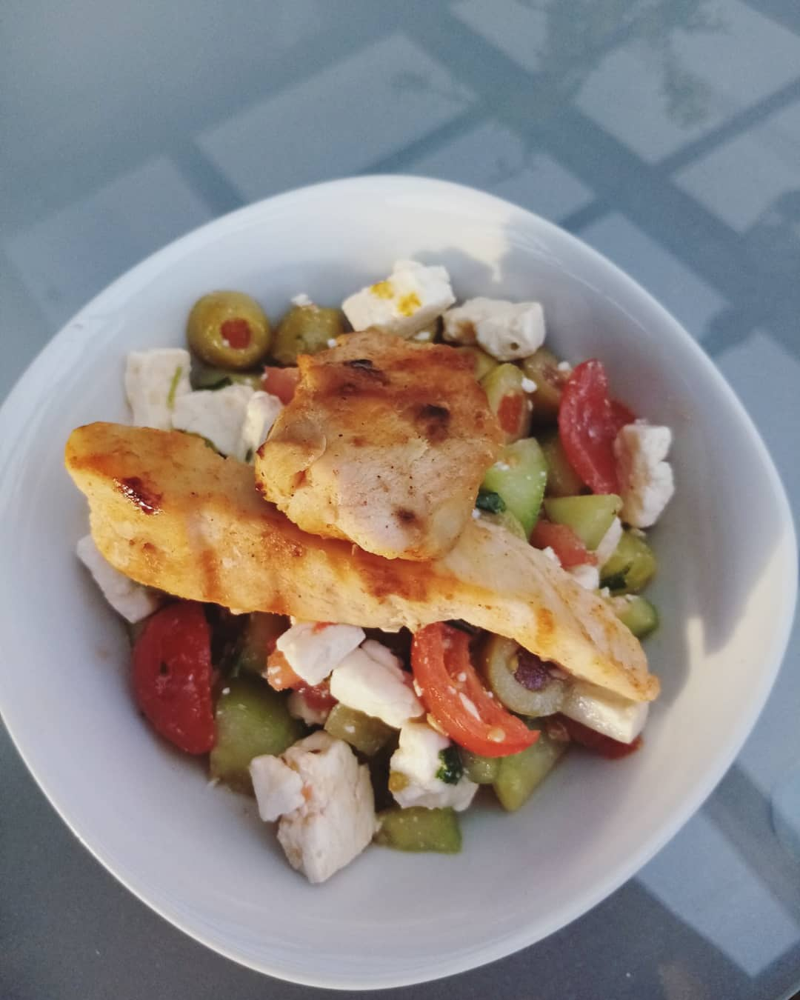

Grécky šalát podľa @navar_daco — Normy Jedál
Grécky šalát s opečeným kuracím mäsom 😉
#greeksalad #chickenbreast #greckysalat #salat #olive #lunchtime #lunch #obed #tasteofhome #tasteofkosice #tasteofslovakia #tasty #foodstyling #foodtime #foodblogger #foodphotography #foodstagram #foodlover #foodstylist #foodpics #foodporn #topjedlo #toprecept #healthylifestyle #healthly #healthyrecipes #zdravoachutne #zdravastrava #zdroweodżywianie #fitreceptysk